FRANZA
CONSTRUCCIONES
¿Qué necesitas?
Hace el cambio que tanto necesita tu hogar
¡Líderes en calidad y compromiso!
Con más de 15 años de experiencia, en Franza desarrollamos soluciones constructivas a medida, combinando innovación, eficiencia y profesionalismo en cada proyecto.
Nuestros Servicios
Obras Civiles
Realizamos obras civiles de todo tipo, desde remodelaciones hasta construcciones completas.
Obras Industriales
Nos especializamos en obras industriales, adaptándonos a las necesidades de cada cliente.

Arquitectura
Ofrecemos servicios de arquitectura para diseñar espacios funcionales y estéticamente agradables.
Uno de nuestros TRABAJOS
Remodelacion completa de una casa
 Villa Lynch, Tres de Febrero
Villa Lynch, Tres de Febrero
Se realizaron las demoliciones de revoques en mal estado y se ejecutaron nuevos
Impermeabilización de techos
Nueva instalación eléctrica independiente para aires acondicionados
Reforma de baño
Pintura completa interior y exterior
Reforma de fachada